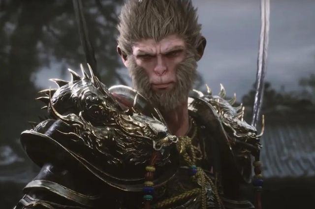
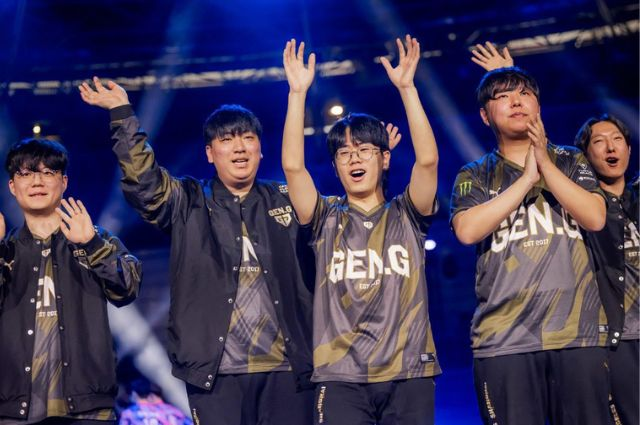

Black Myth: Wukong - Apenas mais um ou revolucionário?
postado 09/06/2024 Black Myth: Wukong é o mais recente lançamento no estilo soulslike (Dark Souls Series, Elden Ring) que promete revolucionar o mundo dos games. Com uma proposta inovadora e gráficos impressionantes, o jogo tem conquistado a atenção dos fãs de jogos eletrônicos. A notícia de que o lançamento "em mídia física" não incluirá discos pegou muitos jogadores de surpresa, mas a expectativa em torno do título continua alta.
Leia MaisGen G é a Vencedora do Valorant Masters Shangai!
postado 09/06/2024 Após um longa corrida pela competição, contra inúmeros times de extrema qualidade, a Gen G se consagra a campeã do Valorant Masters Shangai com uma vitória de 3 x 2 contra a Team Herectics, outro time que também surpreendeu durante o campeonato. Com essa vitória a Gen G consegue o seu segundo título no Valorant.
Leia Mais